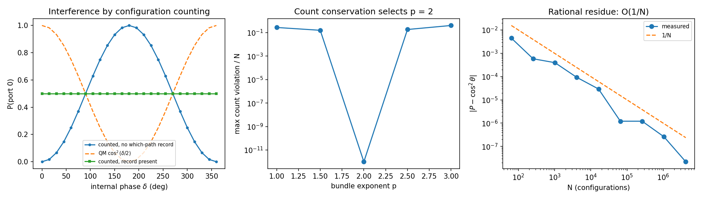
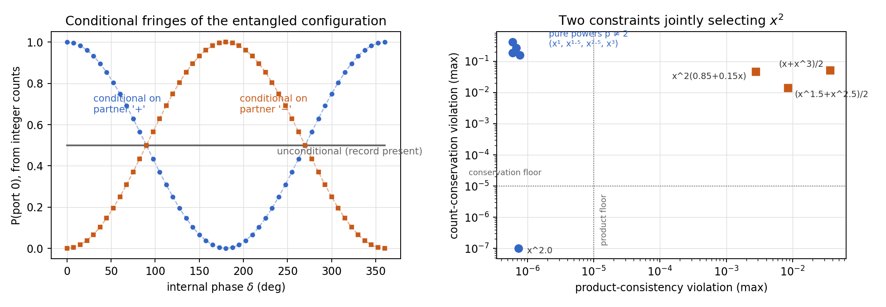
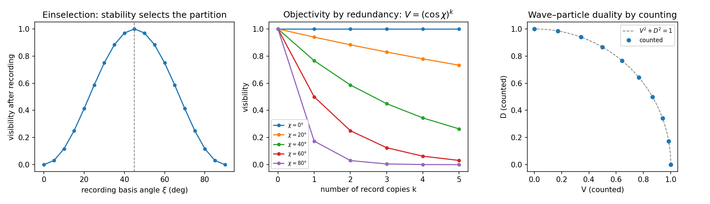
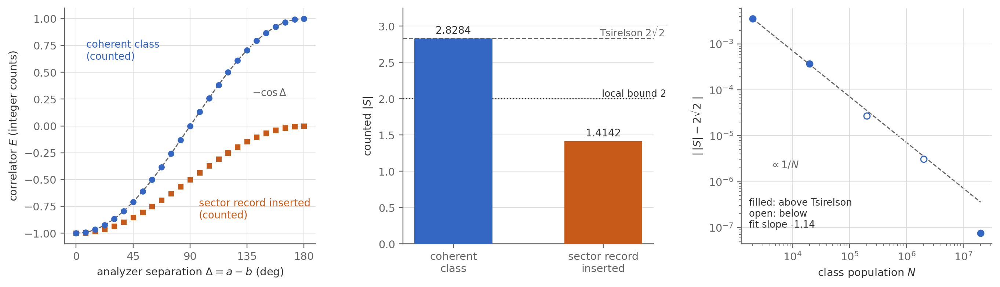

A finite, timeless configuration ontology for physics: quantum probability derived as a counting theorem, Bell violation exhibited by counting, and a labeled research program toward emergent time and geometry.
Configuration Realism (CR) is the framework obtained by reading three of the best-confirmed results in physics at face value. The relativity of simultaneity, read ontically, yields a block universe: all events exist, none privileged as present. The Wheeler–DeWitt constraint of canonical quantum gravity, read at face value, eliminates fundamental temporal evolution. And the Born rule of quantum probability, if its exponent is a fact about the world rather than a principle about the credences of observers, requires outcome classes with a canonical measure — which is to say, finite ones. CR is the minimal ontology consistent with all three readings: a timeless, finite configuration space, in which information exists only as physical records, probability is literal counting, and change is difference read along the refinement ordering of an observer’s records — with time as the emergent coordinate that labels it.
The work is organized by epistemic status, and every claim is classified — postulate, theorem, verified, argument, conjecture, or open — in a ledger at the end of each paper. The derived core is quantum probability: the population of an outcome class is proved to equal \(N|\alpha|^2\) under named structural assumptions (the Born exponent as a counting theorem), and the CHSH quantity assembled from ratios of integer counts reaches the quantum value \(2\sqrt{2}\) — a finite ensemble of definite configurations is not a hidden-variable model, and the papers show exactly why. The conjectural program — causal structure, Lorentzian geometry, geodesic dynamics, horizon thermodynamics as continuum limits of closure geometry — is stated as such, with its open problems named.
A framework that reproduced quantum statistics exactly, in every regime, would be an interpretation. Configuration Realism is not in that position: finiteness leaves fingerprints, none shared by any continuum formulation. Full statements, mechanisms, and the falsifiability analysis are in the foundations paper; in brief:
Three papers, drafted July 2026. The two derivation papers are self-contained; the foundations paper states the full framework and integrates them.
Abstract. We prove that, in a finite and timeless configuration ontology with relational phase structure, the population of an outcome class — the number of configurations compatible with an observer’s records — equals \(N|\alpha|^2\), where \(N\) is the population of the class being partitioned and \(\alpha\) is the coherent sum of stage-relative configuration phases over the outcome class. Phase enters the ontology at two levels: it attaches additively to degrees of freedom, which makes phase additivity a lemma rather than an assumption; and it is relational — the phase of a configuration is defined relative to a stage of an observer chain, accumulated along the refinement ordering. The relational character is not optional: we prove that no context-free phase assignment is consistent with the existence of nontrivial devices. The derivation then has two steps, each by contradiction: a population rule that is not a pure power of \(|\alpha|\) contradicts the multiplicativity of counting for independent subsystems; a power other than two contradicts the conservation of the number of configurations — which is free of charge, because a device stands between two stages whose records differ by no outcome information, and whose compatibility class is therefore one fixed set. The mathematical core is classical; the contribution is the premise: the conserved quantity is a cardinality, not a normalization convention. A necessity argument shows that an ontic Born exponent requires canonically measurable — finite — outcome classes. Because probability is defined as a counting ratio, the Born rule follows from the population theorem; the further claim that observed frequencies track these ratios consumes exactly one stated typicality assumption, on which the value of the exponent does not depend. All results are verified by literal enumeration in an explicit finite model whose stage-relative phase bookkeeping matches the ontology exactly.
Abstract. A finite ensemble of definite, equally real configurations looks like it must obey the Bell inequalities: definite values, counted, are the textbook picture of a local hidden-variable model. We show that the instinct fails, and exhibit the failure by literal enumeration. In the finite, timeless configuration ontology of the companion papers — where probability is counting, phase is stage-relative, and the population of an outcome class is proved to equal \(N|\alpha|^2\) — the CHSH quantity assembled from ratios of integer counts reaches the quantum value \(2\sqrt{2}\) to \(O(1/N)\); at \(N = 4.2\times 10^6\), counted \(|S| = 2.8284267\). The instinct fails for three separable reasons, each with a counting formulation: structural exclusion (which configurations exist) is relative to the instantiated measurement bases and fixes only the aligned-basis correlations; configurations bear outcome records only for devices their correlation structure contains, so no configuration answers two incompatible settings and, by Fine’s theorem, no Bell inequality can be derived; and the skew-angle statistics are carried by the phase structure of the class — the same cross terms that carry two-slit interference. A control run makes the mechanism visible: inserting a sector record, the which-path analog, forces per-class summation, the cross terms never form, and counted \(|S|\) falls below the local bound. Marginal counts are computed for each wing from that wing’s structure alone, so the counting form of no-signaling holds by construction and is tested exactly, including at small \(N\). On the no-go ledger the ontology keeps locality and free settings; for the plain Bell scenario its operative escape is the absence of counterfactual values, with the denial of absolute outcomes required only in Wigner’s-friend extensions. One in-model prediction distinguishes the framework from continuum quantum mechanics: \(\bigl||S| - 2\sqrt 2\bigr| = O(1/N)\), with the residue’s scale robust and its sign conditional on the model’s integer-apportionment rule, which is flagged as a postulate. This paper is a demonstration and a disentangling, not a new theorem: given the companion results, the violation is guaranteed; what is shown is why a counting ontology is entitled to it.
Abstract. We propose Configuration Realism (CR): physical reality consists of a finite, timeless configuration space, each configuration a complete arrangement of fundamental degrees of freedom. Phase enters at two levels: it attaches additively to degrees of freedom, and it is relational — defined for a configuration relative to a stage of an observer chain, accumulated along the refinement ordering. Configurations do not evolve. Information exists only as finite physical records — lossy encodings of correlations — and each record defines a compatibility class, the configurations it cannot distinguish. Closure laws express the implication structure among correlations and order records by refinement; observers are chains of record-bearing stages along this ordering; change is difference read along a refinement chain, and time is the emergent coordinate that labels it. Closure distance, accumulating in discrete quanta, measures the physical restructuring refinement requires. The paper is organized by epistemic status. Its derived core, developed in two companion papers, is quantum probability as counting: the population of an outcome class is proved to equal \(N|\alpha|^2\) under named structural assumptions, with the frequency reading consuming exactly one typicality principle; and the CHSH quantity assembled from integer counts reaches the quantum value \(2\sqrt 2\), the ontology giving up counterfactual definiteness in the plain Bell scenario — and the absoluteness of outcomes where Wigner’s-friend extensions demand it — rather than locality or free settings. Direct consequences follow for entropy (two entropies of opposite sign along refinement, the arrow of time carried by the increasing one), for the classical limit, and for objectivity as redundancy. The remainder is a labeled research program: causal structure, Lorentzian geometry, geodesic dynamics, and horizon thermodynamics as conjectured continuum limits of closure geometry, with the constructions that would establish them stated as open problems. Every claim in the paper is tabulated with its status — postulate, theorem, verified, argument, conjecture, or open.
The framework rests on six postulates. Condensed statements follow; the full statements, with their status classifications, are in the foundations paper.
Every derived claim is checked by literal enumeration in explicit finite models: configurations are materialized as lists, probabilities are computed by counting elements, the counting rule was fixed before any case was computed, and device parameters enter only through correlation structure — never as weights on configurations. Phases are stage-relative throughout, exactly as Postulate 1 prescribes. All figures below are generated by the scripts in Code & Data.
code/cr_toy_model.py
Six tests of the counting rule \(n_i = N|\alpha_i|^2\) at class populations up to \(4.2\times10^6\). Unequal beamsplitters: counted probability matches \(\cos^2\theta\) to \(\sim 3\times10^{-7}\) (at \(\theta = 15^\circ\): 933,013 of \(10^6\) configurations against 0.9330127). Mach–Zehnder interference: fringe visibility 1.0000 by counting, tracking \(\cos^2(\delta/2)\); inserting a which-path record drives visibility to 0.0000. Conditionalization: measurement update as literal elimination reproduces conditional Born values to \(5\times10^{-7}\). Three-outcome splitters: same law, no new ingredients. Exponent uniqueness: with the scale calibrated once and held fixed, count conservation is violated by 15–41% for \(p \in \{1, 1.5, 2.5, 3\}\) and satisfied exactly at \(p = 2\) — finiteness plus linearity force Born’s square. Rational residue: the deviation from exact Born statistics scales as \(O(1/N)\), measured log–log slope \(-1.06\).

code/step1_multiplicativity.py
The two constraints of the Born derivation, separated numerically: product consistency across independent subsystems eliminates every monotone non-power rule (violations at the \(10^{-2}\) level), while count conservation eliminates every power but the square — the two theorems of the derivation, each doing exactly its own work. Entanglement: multiplicativity fails for a Bell-type state, as the derivation requires (its factorization lemma presupposes independence); the entangled partner acts as a which-path record, driving unconditional fringe visibility to 0.0000; conjugate-basis measurement restores conditional fringes at visibility 1.0000 with opposite phases — the quantum eraser, by counting.

code/step4_stability.py
The domain of the Born rule, fixed by which partitions can carry stable records. Einselection by counting: recording in a basis rotated by \(\xi\) from the coherent bundle disturbs downstream fringes except at the bundle-aligned basis (\(\xi = 45^\circ\)), where recording costs nothing — the stability criterion selects the recordable partition, not the modeler. Objectivity as redundancy: \(k\) partial records at coupling strength \(\chi\) leave visibility \((\cos\chi)^k\), verified at every grid point — stable records copy freely, cross-cutting records degrade geometrically. Wave–particle duality: visibility and distinguishability, both obtained from integer counts, satisfy \(V^2 + D^2 = 1\) with maximum deviation \(3\times10^{-4}\).

code/chsh_by_counting.py
Bell violation from a finite list of definite configurations. Aligned analyzers: same-spin count exactly 0 of 4,200,000 — structural exclusion, in its basis. Skew analyzers: the “forbidden” same-spin configurations exist, 307,538 per class against a Born value of 307,537.9 — exclusion is basis-relative. CHSH at the standard settings: \(|S| = 2.8284267\) from integer counts, within \(5\times10^{-7}\) of the quantum value \(2\sqrt 2\). Control run: inserting a sector record (the which-path analog) forces per-class summation and \(|S|\) falls to 1.4142, below the local bound — the entire violation is carried by the cross terms the record removes. No-signaling by counting: each wing’s marginal counts are computed from that wing’s structure alone and are exactly independent of the other wing’s setting, tested down to \(N = 20\). The residue \(\bigl||S| - 2\sqrt2\bigr|\) scales as \(O(1/N)\), landing on both sides of the Tsirelson bound — the scale robust, the sign conditional on the model’s integer-apportionment rule.

All scripts are plain Python (NumPy; Matplotlib for figures) and run in seconds. Each prints its tests and verdicts to the console and regenerates the corresponding figure.
cr_toy_model.py — Born by counting: splits, interference, decoherence, conditionalization, exponent uniqueness, \(O(1/N)\) scaling.step1_multiplicativity.py — product consistency vs. conservation; entanglement and the quantum eraser by counting.step4_stability.py — einselection, redundancy \((\cos\chi)^k\), and \(V^2+D^2=1\) from integer counts.chsh_by_counting.py — CHSH at \(2\sqrt 2\) by counting; sector-record control; exact no-signaling; residue scaling.chsh_figure.py — generates the CHSH results figure.pip install numpy matplotlib python3 cr_toy_model.py python3 step1_multiplicativity.py python3 step4_stability.py python3 chsh_by_counting.py
Author
Russell Tillitt
Independent Researcher
San Francisco, California
Suggested Citation
Tillitt, R. (2026). The Born Exponent from Counting: Quantum Probability in a Finite Configuration Ontology. configurationrealism.com.
Tillitt, R. (2026). CHSH by Counting: Bell Violation in a Finite Configuration Ontology. configurationrealism.com.
Tillitt, R. (2026). Configuration Realism: Foundations and Research Program. configurationrealism.com.
Revision History
Version 0.2 — July 2026: three papers (Born exponent, CHSH by counting, foundations), toy models and results, postulates updated to the relational-phase formulation.
Version 0.1 — March 2026: initial postulates published at this site under the name Configuration Realism.
Origin — 2024, possibly earlier: the framework was first developed in written form under the name Quantum Eternalism. The earliest dated summary (private correspondence, April 2024) already contains the core commitments: a timeless totality of all configurations, no evolution or branching, observation as change in an observer’s information state, interference among configurations shaping what is observed, and an emergent arrow of time — developed in explicit relation to Barbour’s timeless mechanics and the Wheeler–DeWitt equation.
© 2026 Russell Tillitt. All rights reserved.